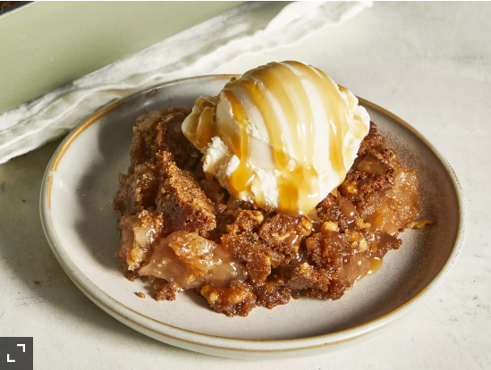

Caramel Apple Dump Cake
Warm, spicy apples with a buttery, crunchy topping. This screams fall! This is so easy and quick and sure to be a crowd pleaser. This would be delicious with vanilla ice cream and maybe top with more of the caramel sauce.
Ingredients
- Cooking spray
- 2 (21 ounce) cans apple pie filling
- 1/2 cup caramel sauce
- 1 (15.25 ounce) package spice cake mix
- 1 cup salted butter, melted
- 1 cup coarsely chopped walnuts
Directions
- Preheat the oven to 350 degrees F (175 degrees C). Lightly grease a 9x13-inch baking pan with cooking spray.
- Spread apple pie filling in an even layer on the bottom of the pan. Drizzle caramel sauce evenly over apples. Sprinkle cake mix evenly over apples and caramel. Drizzle melted butter evenly over cake mix. Sprinkle evenly with chopped walnuts.
- Bake in the preheated oven until cake is golden brown and the filling is bubbling through to the top, 50 to 55 minutes. Let cool at least 15 minutes. Serve warm or at room temperature.